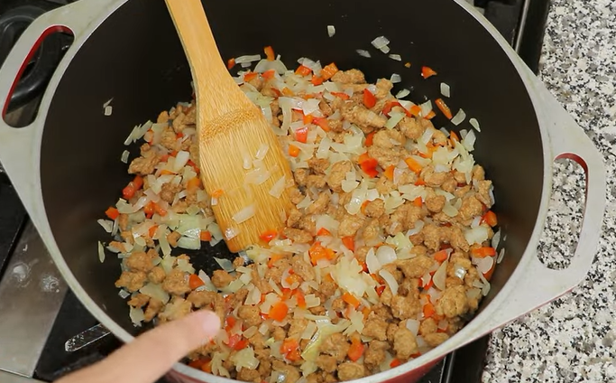

Albóndigas de berenjena
Pelar y cortar las berenjenas a lo largo.
Ponerles sal por encima y dejar reposar 15min. Después de ese tiempo lavar y secar con servilletas de cocina. En un sartén caliente agregar un poquito de aceite y cocinar las láminas de berenjena aprox 1min de cada lado, hasta que estén doradas.
Una vez cocinadas todas, llevar a la procesadora, agregar sal al gusto, ajo en polvo, media taza de pan rallado y media taza de queso rallado. Procesar hasta obtener una pasta bien lisa. Llevar a un bowl y agregar una clara de huevo e integrar bien.
Para formar las albóndigas, mojarse las manos y agarrar un poquito de la mezcla, dar forma y pasar por pan rallado. Una vez rebozadas llevar a un sartén con un poquito de aceite y dejarlas hasta que se doren.
Por último preparar una salsa de su preferencia y agregar las albóndigas, dejar cocinar 5min y agregar queso fresco por encima, dejar 5min más y como toque final agregar perejil fresco por encima.
Pastel de papas
Empezar preparando un puré de papas, para esto hervir papas en agua con sal y una vez blandas, colar las papas y agregar sal y pimienta al gusto, leche y manteca. Pisar con un pisapapas hasta obtener un puré liso.
Para el relleno, en un sartén caliente agregar aceite de oliva y una vez caliente incorporar la cebolla picada junto con el morrón. Mezclar y agregar sal y pimienta al gusto. Dejar cocinar hasta que la cebolla empiece a volverse transparente, entonces agregar la soja texturizada, ajo picado y media taza de agua o caldo de verduras

Condimentar con comino, pimentón y ají molido al gusto y agregar puré de
tomates. Tapar y dejar cocinando a fuego mínimo por 10 miutos. Una vez
listo agregar huevo picado y dejar entibiar.
Para empezar con el armado, en una fuente apta para horno colocar la mitad
del puré de papas para formar una base, luego colocar el relleno y espacir
bien. Antes de agregar el resto de puré, agregar queso fresco encima del
relleno y ahora si tapar con el resto del puré. Agregar queso rallado de
su preferencia por arriba y mandar al horno a 200 grados hasta que el
queso gratine.
Bizcochuelo de chocolate y banana
Empezar pisando bananas con un tenedor hasta tener un puré, agregar misma cantidad de azucar que de cacao amargo e incorporar. Agregar mitad de taza de aceite de girasol y mezclar bien hasta integrar.
Antes de proseguir agregar esencia de vainilla y canela en polvo. Luego
agregar intercaladamente dos tazas de agua tibia y dos tazas de harina
leudante, hasta tener una mezcla homogénea y espesa.
Antes de pasar al molde agregar media cucharadita de polvo de hornear y
media de bicarbonato de sodio, luego verter la mezcla en un molde o fuente
para horno forrado en papel manteca o enmantecado y enharinado y agregar
rodajas de banana por arriba.
Llevar al horno por 45-50 minutos a temperatura media. Dejar enfriar y desmoldar.
Budín de limón
Para la masa del budín mezclar una taza de azucar con 125gr de margarina pomada y la ralladura de dos limones, incorporar bien y agregar el jugo de un limón
Agregar 3/4 de taza de leche e incorporar de a poco dos tazas de harina, una cucharadita de polvo de hornear y una pizca de sal. Mezclar bien y llevar a un molde apto para horno enmantecado o aceitado y enharinado. Hornear durante 40-45 minutos a 180 grados.
Para el glaseado mezclar 1/2 taza de azúcar impalpable e ir agregando jugo de limòn hasta obtener una consistencia lisa. Agregar el glaseado por encima del budín.